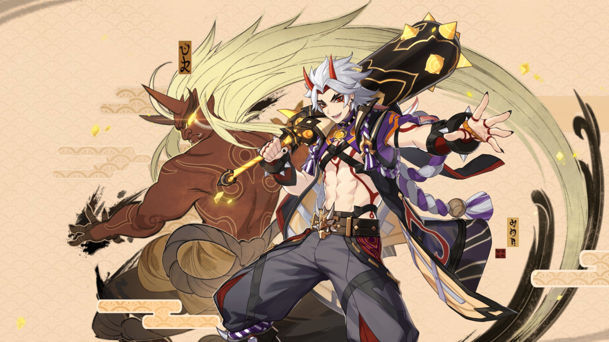
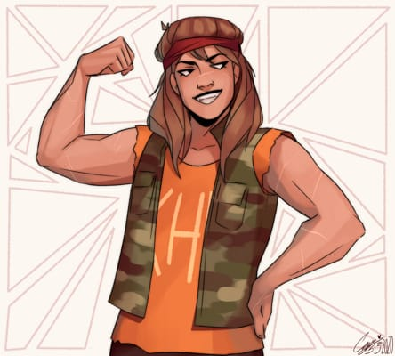
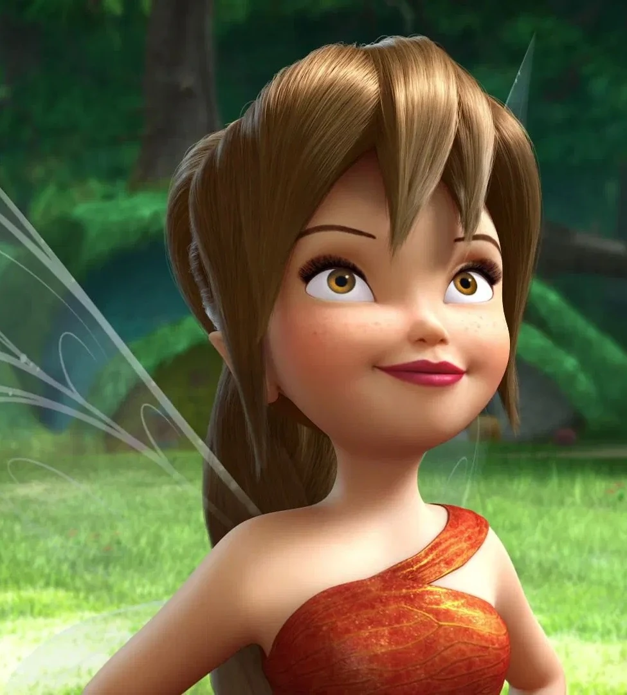

Arataki Itto
Itto is a kind-spirited oni. He has an energetic personality that would help encourage the team. Additionally, he is quite strong, which should make him a great addition to the team as someone who could throw the balls well.
Clarisse La Rue
Clarisse is one of the most accomplished demigod children of Ares, the Greek god of war. Her strength makes her another member of the team meant to take out the opposition. During her time at Camp Half-Blood, she gained a lot of experience leading team battles, which is what dodgeball is.
Sokka

Sokka is the only human on the team. He has a good head for strategy, something that should help the team work more cohesively. He also has a lot of experience with projectiles in the form of his boomerang. This skill should translate well into the dodgeball setting.
Drizzt Do'Urden

Drizzt is an agile drow elf known to put a lot of thought and care into his actions. As a ranger who escaped the Underdark, he has great stealth capabilities that may help him dodge. He is also decently strong, which should make throwing the balls easier.
Fawn
Fawn is an animal talent fairy that's not afraid to get her hands dirty. As a fairy, she is quite small and fast. This makes her a great addition to the team as the opposing team will have a great deal of difficulty trying to hit her with a ball.